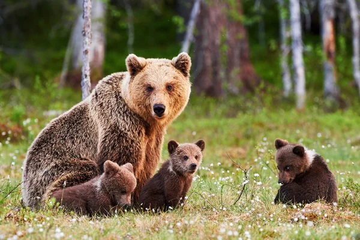
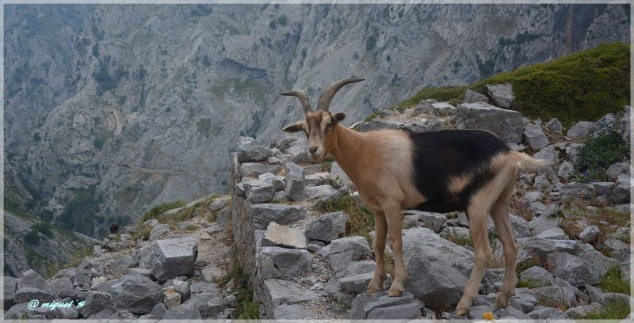
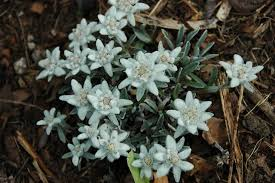
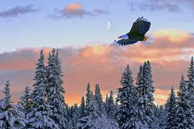
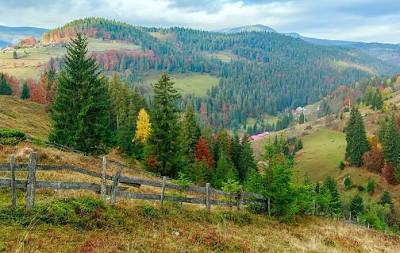
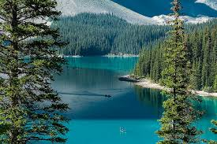

Carpații României reprezintă un adevărat tezaur de biodiversitate, găzduind o varietate
imensă de specii de plante și animale, multe dintre ele endemice sau rare. Munții
noștri sunt parte a rețelei europene de arii protejate Natura 2000 și includ numeroase
parcuri naționale și rezervații naturale.
Flora Carpaților
Carpații găzduiesc peste 3.500 de specii de plante vasculare, dintre care aproximativ
200 sunt endemice. Pădurile acoperă aproximativ 60% din suprafața munților, cu specii
cum ar fi:
- Fag (Fagus sylvatica) - dominant în etajul montan inferior
- Brad (Picea abies) - caracteristic pentru etajul montan superior
- Molid (Abies alba) - în zonele mai umede
- Pin de munte (Pinus mugo) - în tufărișuri alpine
- Jneapăn (Pinus cembra) - specie rară, protejată
În zona alpină întâlnim plante unice precum:
- Floarea-reginei (Leontopodium alpinum)
- Ghiocel (Galanthus nivalis)
- Rododendron (Rhododendron kotschyi)
- Salvie de munte (Salvia glutinosa)
Fauna Carpaților
Diversitatea faunistică este remarcabilă, cu peste 200 de specii de păsări, 60 de
mamifere și numeroase nevertebrate. Printre speciile reprezentative se numără:
Mamifere:
- Urs brun (Ursus arctos) - simbol al Carpaților
- Lup cenușiu (Canis lupus)
- Râs eurasiatic (Lynx lynx)
- Cerb carpatin (Cervus elaphus)
- Capră neagră (Rupicapra rupicapra)
- Marmota (Marmota marmota)
Păsări:
- Vultur sur (Gyps fulvus)
- Acvila de munte (Aquila chrysaetos)
- Cocoșul de munte (Tetrao urogallus)
- Ciocănitoare cu spate alb (Dendrocopos leucotos)
Reptile și amfibieni:
- Vipera berus
- Salamandra carpatică (endemică)
- Tritoni
Arii protejate
Carpații României includ 13 parcuri naționale și numeroase rezervații naturale:
Parcuri Naționale:
- Retezat - primul parc național din România
- Piatra Craiului
- Cozia
- Ceahlău
- Cheile Bicazului-Hășmaș
- Semenic-Cheile Carașului
- Domogled-Valea Cernei
Rezervații naturale:
- Peștera Scărișoara
- Cheile Turzii
- Piatra Altar
- Lacurile glaciare din Făgăraș
Amenințări și conservare
Biodiversitatea carpatină este amenințată de:
- Defrișările ilegale
- Extinderea turismului necontrolat
- Schimbările climatice
- Fragmentarea habitatelor
Măsuri de conservare includ:
- Reîmpăduriri
- Monitorizarea speciilor
- Dezvoltarea turismului ecologic
- Educația ambientală
Flora Carpaților
Carpații găzduiesc peste 3.500 de specii de plante vasculare, dintre care aproximativ 200 sunt endemice. Pădurile acoperă aproximativ 60% din suprafața munților, cu specii cum ar fi: - Fag (Fagus sylvatica) - dominant în etajul montan inferior - Brad (Picea abies) - caracteristic pentru etajul montan superior - Molid (Abies alba) - în zonele mai umede - Pin de munte (Pinus mugo) - în tufărișuri alpine - Jneapăn (Pinus cembra) - specie rară, protejată În zona alpină întâlnim plante unice precum: - Floarea-reginei (Leontopodium alpinum) - Ghiocel (Galanthus nivalis) - Rododendron (Rhododendron kotschyi) - Salvie de munte (Salvia glutinosa)Fauna Carpaților
Diversitatea faunistică este remarcabilă, cu peste 200 de specii de păsări, 60 de mamifere și numeroase nevertebrate. Printre speciile reprezentative se numără: Mamifere: - Urs brun (Ursus arctos) - simbol al Carpaților - Lup cenușiu (Canis lupus) - Râs eurasiatic (Lynx lynx) - Cerb carpatin (Cervus elaphus) - Capră neagră (Rupicapra rupicapra) - Marmota (Marmota marmota) Păsări: - Vultur sur (Gyps fulvus) - Acvila de munte (Aquila chrysaetos) - Cocoșul de munte (Tetrao urogallus) - Ciocănitoare cu spate alb (Dendrocopos leucotos) Reptile și amfibieni: - Vipera berus - Salamandra carpatică (endemică) - TritoniArii protejate
Carpații României includ 13 parcuri naționale și numeroase rezervații naturale: Parcuri Naționale: - Retezat - primul parc național din România - Piatra Craiului - Cozia - Ceahlău - Cheile Bicazului-Hășmaș - Semenic-Cheile Carașului - Domogled-Valea Cernei Rezervații naturale: - Peștera Scărișoara - Cheile Turzii - Piatra Altar - Lacurile glaciare din FăgărașAmenințări și conservare
Biodiversitatea carpatină este amenințată de: - Defrișările ilegale - Extinderea turismului necontrolat - Schimbările climatice - Fragmentarea habitatelor Măsuri de conservare includ: - Reîmpăduriri - Monitorizarea speciilor - Dezvoltarea turismului ecologic - Educația ambientală
Ursul brun - Rege al Carpaților

Capra neagră - Simbol al libertății

Floarea reginei - Comoară alpină

Vulturul sur - Stăpân al cerului

Pădurea carpatină - Plămânul verde

Lac glaciar - Oglindă a naturii